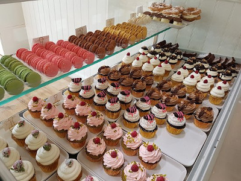

Exploration
Principe
Le jeu devine mon nombre est l'un des jeux, le plus simples, qu'on puisse jouer à deux.
Dans ce jeu, un des joueurs choisit un nombre que le second joueur doit deviner en moins de n essais.
Devine mon nombre
Activité débranchée
Un élève choisit un nombre entre 1 et 127. Il le note sur une feuille, c'est le nombre secret .
Son collègue de classe, essaye de trouver le nombre secret en un nombre minimal d'essais. Pour celà
il propose un nombre : nombre proposé
Le premier élève lui répond :
> : si le nombre proposé est inférieur au nombre secret < : si le nombre proposé est supérieur au nombre secret = : si le nombre proposé est égal au nombre secret
Activité débranchée
Questions
Quel est le nombre minimal d'essais pour trouver le nombre secret ?
Dresser un tableau des étapes qui vous ont permis de retrouver la solution.
Exemple
Essai
1
2
3
4
5
6
7
Proposition
Réponse
Démarche
On donne les exemples suivants qui permettent de retrouver le nombre secret en un nombre minimal
d'essais :
Exemple 1
On suppose que le nombre secret est 63
Essai
1
2
3
4
5
6
7
Proposition
64
32
48
56
60
62
63
Réponse
<
>
>
>
>
>
=
Exemple 2
On suppose que le nombre secret est 42
Essai
1
2
3
4
5
6
-
Proposition
64
32
48
40
44
42
-
Réponse
<
>
<
>
<
=
-
Exemple 3
On suppose que le nombre secret est 99
Essai
1
2
3
4
5
6
7
Proposition
64
96
112
104
100
98
97
Réponse
>
>
<
<
<
>
=
Questions
Pourquoi on commence toujours par proposer le nombre 64 ?
D'après les tableaux précédents, quel est le nombre proposé qui suit au nombre 64 ?
A votre avis, comment ces nombres ont été trouvés ?
Sachant que la réponse au nombre proposé 96 est : >. Et que la réponse au nombre proposé
112
est : <. Calculer le nombre proposé suivant.
Le nombre est dans l'intervalle ]96, 112[
Sachant que la réponse au nombre proposé 36 est : >. Et que la réponse au nombre proposé
40
est : <. Calculer le nombre proposé suivant.
Le nombre est dans l'intervalle ]36, 40[
Utiliser le principe décrit pour deviner un nombre secret dans l'intervalle [1, 127].
Simulation
Sélectionner un nombre dans l'intervalle [1, 127] et je vais le deviner en 7 essais ou moins.
essai
{{index + 1}}
{{propositions.length + 1}}
nombre proposé
{{prop['nbre']}}
{{current_value}}
Reset
réponse
{{prop['reponse']}}
---
>
<
=
Valider
Exemple d'exécution
Bienvenue, cher utilisateur
Aujourd'hui, je vais jouer avec vous au jeu devine mon nombre.
Principe du jeu
=-=-=-=-=-=-=-=-=-=-=-=-=-=-=-=-=-=-=-=-=-=-=-=-=-=-=-=-=-=-
Le principe du jeu est simple :
- Vous choisissez un nombre dans l'intervalle [1, 127].
- Je vais le deviner en 8 essais max.
- Vous devez indiquer si mon nombre proposé est supèrieur, inférieur ou égal au votre.
Attention! Notez le nombre pour ne pas l'oublier.
...
Mon essai n°1
********************
Je propose : 64
Le nombre secret est-t-il :
- supérieur à mon nombre (tapez >)
- inférieur à mon nombre (tapez <)
- égal à mon nombre (tapez =)
? <
Mon essai n°2
********************
Je propose : 32
Le nombre secret est-t-il :
- supérieur à mon nombre (tapez >)
- inférieur à mon nombre (tapez <)
- égal à mon nombre (tapez =)
? >
Mon essai n°3
********************
Je propose : 48
Le nombre secret est-t-il :
- supérieur à mon nombre (tapez >)
- inférieur à mon nombre (tapez <)
- égal à mon nombre (tapez =)
? <
Mon essai n°4
********************
Je propose : 40
Le nombre secret est-t-il :
- supérieur à mon nombre (tapez >)
- inférieur à mon nombre (tapez <)
- égal à mon nombre (tapez =)
? >
Mon essai n°5
********************
Je propose : 44
Le nombre secret est-t-il :
- supérieur à mon nombre (tapez >)
- inférieur à mon nombre (tapez <)
- égal à mon nombre (tapez =)
? >
...
Mon essai n°6
********************
Je propose : 46
Le nombre secret est-t-il :
- supérieur à mon nombre (tapez >)
- inférieur à mon nombre (tapez <)
- égal à mon nombre (tapez =)
? =
:D :) :D :) :D :) :D :) :D :) :D :) :D :) :D :) :D :) :D :)
Hoorray! J'ai trouvé en 6 coups.Questions
Quel est le nombre secret choisit par l'utilisateur ?
Quel est le nombre d'essais effectués par l'ordinateur pour trouver le nombre secret ?
Quel est le traitement qui se répète plusieurs fois ?
Etapes du programme
Saisir la réponse de l'utilisateur
Afficher le numéro d'essai
Afficher un message de bienvenue
Afficher un message de victoire, si la réponse est "="
Répéter
Réduire l'intervalle de recherche, si la réponse est ">" ou "<"
Initialiser les bornes de l'intervalle [1, 127]
Jusqu'à 7 essais ou réponse est "="
Calculer et afficher le nombre proposé
Briques logicielles
Brique n°2 - Contrôle de saisie
Contrôle de saisie
Sans contrôle de saisie
Afficher("Votre choix (A, B ou C) ? ")
Lire(choix)
# -
choix = input("Votre choix (A, B ou C) ? ")
>>> # -
>>> choix = input("Votre choix (A, B ou C) ? ")
Votre choix (A, B ou C) ? X
>>> print(choix)
X
Remarque
Malgré que le programme demande d'entrer comme choix les lettres : A, B ou C, l'utilisateur peut saisir
n'importe quoi et il sera accepté par le programme.
Dans certains programmes, ce comportement peut générer des erreurs d'exécution. On devra lui trouver une
solution : Le contrôle de saisie .
Avec contrôle de saisie
Répéter
Afficher("Votre choix (A, B ou C) ? ")
Lire(choix)
Jusqu'à (choix="A") ou (choix="B") ou (choix="C")
while True:
choix = input("Votre choix (A, B ou C) ? ")
if choix == "A" or choix == "B" or choix == "C":
break
>>> while True:
... choix = input("Votre choix (A, B ou C) ? ")
... if choix == "A" or choix == "B" or choix == "C":
... break
...
Votre choix (A, B ou C) ? X
Votre choix (A, B ou C) ? haha
Votre choix (A, B ou C) ? C
>>> print(choix)
C
Questions
Ecrire un algorithme qui permet de saisir l'age d'un élève dans l'intervalle [15, 21]. Traduire en langage
Python.
R√©p√©terAfficher("Quel est l'age de l'√©l√®ve [15, 21] : ") 15 ≤ age ≤ 21
Répéter
Afficher("Quel est l'age de l'élève [15, 21] : ")
Lire(age)
Jusqu'√† 15 ≤ age ≤ 21
Ecrire un algorithme qui permet de saisir deux notes dans l'intervalle [0, 20]. Puis, de calculer et
afficher leur moyenne. Le traduire en Python.
Brique n°3 - Répétition
Boucle
Afficher un message plusieurs fois
Pour i de 0 à 4 Faire
Afficher("-- Police line do not cross --")
Fin Pour
for i in range(5):
print("-- Police line do not cross --")
>>> for i in range(5):
... print("-- Police line do not cross --")
...
-- Police line do not cross --
-- Police line do not cross --
-- Police line do not cross --
-- Police line do not cross --
-- Police line do not cross --
Afficher un compteur
Pour cpt de 1 à 3 Faire
Afficher("Pièce n°", cpt)
Fin Pour
for cpt in range(1, 4):
print("Pièce n°", cpt)
>>> for cpt in range(1, 4):
... print("Pièce n°", cpt)
...
Pièce n° 1
Pièce n° 2
Pièce n° 3
Afficher les nombres impairs inférieurs à 10
Pour i de 1 à 9 (pas=2) Faire
Afficher(i)
Fin Pour
for i in range(1, 10, 2):
print(i)
>>> for i in range(1, 10, 2):
... print(i)
...
1
3
5
7
9
Récapitulatif
Cuire des cakes dans un petit four

Gâteau dans une patisserie
On donne l'algorithme suivant permettant la cuisson de cakes dans un four.
Programme Cuisson_four
Début
// Saisie nombre de cakes (voir brique n°2)
Répéter
Afficher("Entrer le nombre de cakes (> 0) ? ")
Lire(nbc)
Jusqu'à nbc > 0
// Saisie taille du four (voir brique n°2)
Répéter
Afficher("Entrer la taille du four (> 0) ? ")
Lire(tf)
Jusqu'à tf > 0
// Calcul du nombre de cuissons
nb_cuissons ← nbc div tf + Ent(nbc mod tf ≠ 0)
// Affichage du nombre de cuissons (Utiliser Brique n°1)
Afficher("Pour cuire", nbc, "cakes, il faudra", nb_cuissons, "cuissons.")
// Affichage cuissons
Afficher("- Ouvrir le four. Sortir le plateau.")
// Répétition de la cuisson nb_cuissons fois (voir brique n°3)
Pour i de 1 à nb_cuissons Faire
// Calcul du nombre de cakes à cuire dans le four
Si nbc > tf Alors
nc ← tf
Sinon
nc ← nbc
Fin Si
// Calcul du nombre de cakes restants après la cuisson de nc cakes
nbc ← nbc - nc
// Cuisson d'une série de cakes
Afficher("Cuisson n°", i) // Utiliser brique n°1
Afficher("- Mettre", nc, "cakes dans le plateau") // Utiliser brique n°1
Afficher("- Remettre le plateau dans le four. Fermer le four.")
Afficher("- Attendre la cuisson")
Afficher("- Ouvrir le four. Sortir le plateau.")
Afficher("- Enlever les", nc, "cakes cuits") // Utiliser brique n°1
Fin Pour
// fin de la cuisson de tous les cakes
Afficher("- Remettre le plateau dans le four. Fermer le four.")
FinQuestions
On demande de :
Déterminer le nom et le type des variables utilisées dans cet algorithme. Compléter le TDO (Tableau de
Déclaration des Objets).
Calculer le nombre de cuissons nécessaires dans les cas suivants :
nbc ← 8 et tf ← 4
nbc ← 1 et tf ← 6
nbc ← 10 et tf ← 4
Calculer le nombre de cakes à cuire, dans une seule cuisson, dans les cas suivants :
nbc ← 7 et tf ← 4
nbc ← 3 et tf ← 4
Traduire l'algorithme en Python en utilisant les briques logicielles indiquées.
# Nombre de cakes
while True:
nbc = int(input('Entrer le nombre de cakes (> 0) ? '))
if nbc > 0:
break
print('Erreur : Le nombre de cakes doit être supérieur à 0.')
print()
# Taille du four
while True:
tf = int(input('Entrer la taille du four (> 0) ? '))
if tf > 0:
break
print('Erreur : La taille du four doit être supèrieure à 0.')
print()
print(f'Nous allons cuir {nbc} cakes dans un four de {tf} places.')
print()
# Nombre de cuissons
nb_cuissons = nbc // tf + int(nbc % tf != 0)
print("- Ouvrir le four. Sortir le plateau.")
for i in range(1, nb_cuissons + 1):
if nbc > tf:
nc = tf
else:
nc = nbc
nbc = nbc - nc
print("Cuisson n°", i)
print("- Mettre", nc, "cakes dans le plateau")
print("- Remettre le plateau dans le four. Fermer le four.")
print("- Attendre la cuisson")
print("- Ouvrir le four. Sortir le plateau.")
print("- Enlever les", nc, "cakes cuits")
print()
print("- Remettre le plateau dans le four. Fermer le four.")
Assemblages de briques
Afficher un message de bienvenue
Question
Ecrire un algorithme qui affiche le texte suivant :
Bienvenue, cher utilisateur
Aujourd'hui, je vais jouer avec vous au jeu devine mon nombre.
Principe du jeu
=-=-=-=-=-=-=-=-=-=-=-=-=-=-=-=-=-=-=-=-=-=-=-=-=-=-=-=-=-=-
Le principe du jeu est simple :
- Vous choisissez un nombre dans l'intervalle [1, 127].
- Je vais le deviner en 8 essais max.
- Vous devez indiquer si mon nombre proposé est supèrieur, inférieur ou égal au votre.
Attention! Notez le nombre pour ne pas l'oublier.
Afficher("Bienvenue, cher utilisateur")
Afficher('Principe du jeu')
Afficher("Bienvenue, cher utilisateur")
Afficher("Aujourd'hui, je vais jouer avec vous au jeu devine mon nombre.")
Afficher()
Afficher('Principe du jeu')
Afficher('=-' * 30)
Afficher('Le principe du jeu est simple : ')
Afficher("- Vous choisissez un nombre dans l'intervalle [1, 127].")
Afficher("- Je vais le deviner en 8 essais max.")
Afficher("- Vous devez indiquer si mon nombre proposé est supèrieur, "
"inférieur ou égal au votre.")
Afficher()
Afficher("Attention! Notez le nombre pour ne pas l'oublier.")
Afficher()
Initialiser les bornes de l'intervalle
Question
Ecrire les instructions algorithmiques qui initialisent les bornes de l'intervalle [1, 127].
bor_inf désigne la borne inférieure de l'intervallebor_sup désigne la borne supèrieure de l'intervalle
bor_inf ← 1 127
bor_inf ← 1
bor_sup ← 127
Afficher le numéro d'essai
Question
Sachant que la variable essai contient le numéro d'essai, afficher le numéro d'essai de la façon
suivante :
Mon essai n°1
********************
Calculer et afficher le nombre proposé
Questions
Sachant que mid est le nombre situé au milieu de l'intervalle [bor_inf, bor_sup]. Ecrire
l'instruction
algorithmique qui permet de calculer cette valeur.
Exemples
- pour l'intervalle [5, 10] on calcule mid ← (5 + 10) div 2 ou
mid ← 7
- pour l'intervalle [20, 30] on calcule mid ← (20 + 30) div 2 ou
mid ← 25
Sachant que la variable mid contient la valeur proposée, écrire une instruction algorithmique qui
affiche la valeur propos√©e. Si mid ← 64 l'affichage sera effectu√© de la fa√ßon suivante :
Je propose : 64
mid ← (bor_inf +
bor_sup) div 2Afficher("Je propose :", mid)
mid ← (bor_inf + bor_sup) div 2
Afficher("Je propose :", mid)
Saisir la réponse de l'utilisateur
Question
Ecrire l'algorithme qui :
Afficher("Le nombre secret est-t-il :")
RépéterLire(reponse) (reponse dans "<>=")
Afficher("Le nombre secret est-t-il :")
Afficher("- supérieur à mon nombre (tapez >)")
Afficher("- inférieur à mon nombre (tapez <)")
Afficher("- égal à mon nombre (tapez =)")
Répéter
Afficher("? ")
Lire(reponse)
Jusqu'à (long(reponse) = 1) et (reponse dans "<>=")
Réduire l'intervalle de recherche
Remarque
Lorsque l'utilisateur r√©pond par ">", reponse ← '>', cela signifie que le nombre
proposé par l'ordinateur est
inférieur au nombre secret de l'utilisateur,
l'intervalle de recherche sera réduit à [mid+1, bor_sup].
Lorsque l'utilisateur r√©pond par "<", reponse ← '<', cela signifie que le nombre
proposé par l'ordinateur est
supérieur au nombre secret de l'utilisateur,
l'intervalle de recherche sera réduit à [bor_inf, mid-1].
Compléter l'algorithme :
Si reponse = ">" Alorsbor_inf ← mid + 1 reponse = "<" Alors
Si reponse = ">" Alors
bor_inf ← mid + 1
Sinon Si reponse = "<" Alors
bor_sup ← mid - 1
Fin si
Afficher le message de victoire
Remarque
Lorsque l'utilisateur r√©pond par "=", reponse ← '=', cela signifie que le nombre
proposé par l'ordinateur est
égal au nombre secret de l'utilisateur, l'ordinateur a deviné il va afficher un message de victoire de
la forme :
:D :) :D :) :D :) :D :) :D :) :D :) :D :) :D :) :D :) :D :)
Hoorray! J'ai trouvé en 6 coups.Sachant que essai contient le nombre d'essai, compléter l'algorithme.
Si reponse = "=" AlorsAfficher()
Si reponse = "=" Alors
Afficher()
Afficher(':D :) ' * 10)
Afficher("Hoorray! J'ai trouvé en", essai, "coups.")
Fin si
Algorithme
Algorithme
Ecrire l'algorithme du programme.
Programme devine_mon_nombre
Début
// Afficher un message de bienvenue
Afficher("Bienvenue, cher utilisateur")
Afficher("Aujourd'hui, je vais jouer avec vous au jeu devine mon nombre.")
Afficher()
// Afficher le principe du jeu
Afficher('Principe du jeu')
Afficher('=-' * 30)
Afficher('Le principe du jeu est simple : ')
Afficher("- Vous choisissez un nombre dans l'intervalle [1, 127].")
Afficher("- Je vais le deviner en 8 essais max.")
Afficher("- Vous devez indiquer si mon nombre proposé est supèrieur, "
"inférieur ou égal au votre.")
Afficher()
Afficher("Attention! Notez le nombre pour ne pas l'oublier.")
Afficher()
// Initialiser les bornes de l'intervalle
bor_inf ← 1
bor_sup ← 127
Pour essai de 1 à 7 Faire
// Afficher le numéro d'essai
Afficher("Mon essai n°", essai)
Afficher('*' * 20)
// Calculer le nombre proposé
mid ← (bor_inf + bor_sup) div 2
// Afficher le nombre proposé
Afficher("Je propose :", mid)
// Saisir la réponse de l'utilisateur
Afficher('Le nombre secret est-t-il :')
Afficher('- supérieur à mon nombre (tapez >)')
Afficher('- inférieur à mon nombre (tapez <)')
Afficher('- égal à mon nombre (tapez =)')
Répéter
Afficher("? ")
Lire(reponse)
Jusqu'à (long(reponse) = 1) et (reponse dans '<>=')
// Réduire l'intervalle de recherche
Si reponse = ">" Alors
bor_inf ← mid + 1
Sinon Si reponse = "<" Alors
bor_sup ← mid - 1
// Afficher le message de victoire
Sinon
Afficher()
Afficher(':D :) ' * 10)
Afficher("Hoorray! J'ai trouvé en", essai, "coups.")
Sortir
Fin si
Fin Pour
Fin
TDO
Proposer le Tableau de Déclaration des Objets.
Objet
Type/Nature
Rôle
bor_inf
entier
Borne inférieure de l'intervalle de recherche/td>
bor_sup
entier
Borne supérieure de l'intervalle de recherche
essai
entier
Nombre d'essais
mid
entier
Nombre proposé par l'ordinateur
reponse
chaine
Réponse de l'utilisateur à la proposition
Page créée avec ♥ par Mohamed Anis MANI
Année scolaire : 2020/2021